At a high level, in this assignment I implemented Bezier curves and surfaces, area-weighted vertex normals, and operations for editing and subdividing triangle meshes. I also added support for boundary edges and an additional subdivision scheme. Together, these features make it possible to evaluate smooth surfaces and change the geometry and connectivity of a mesh. It was interesting to see how changing only the triangulation of a cube can change the shape it approaches after subdivision. Furthermore, I thought that comparing the rendered results made the connection between the mesh structure and the final surface much easier to see and cooler!
De Casteljau's algorithm repeatedly interpolates between neighboring control points. For my implementation, for each pair, I calculate (1 - t) * points[i] + t * points[i + 1] and append the result to a new vector. Then, because each call to evaluateStep() performs only one level, n input points will produce n - 1 output points. Thus, repeating this process leaves one point, which is exactly the position on the Bezier curve at t.
I used six control points: (0.15, 0.25), (0.30, 0.80), (0.55, 0.65), (0.85, 0.15), (1.15, 0.85), and (1.35, 0.40). The screenshots below show each level at t = 0.5, with the completed curve shown in green. The white points are the original controls, the blue points show the intermediate calculations, and the final point is red.
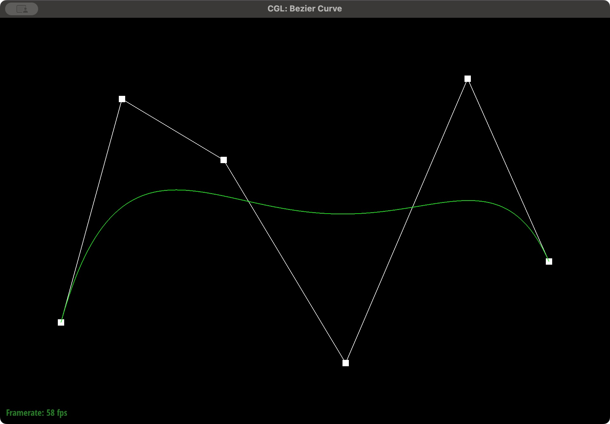
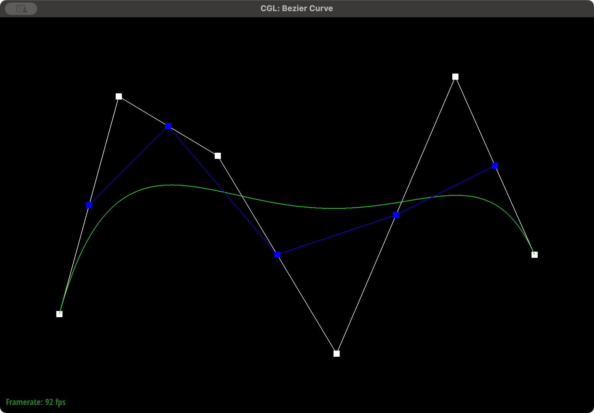
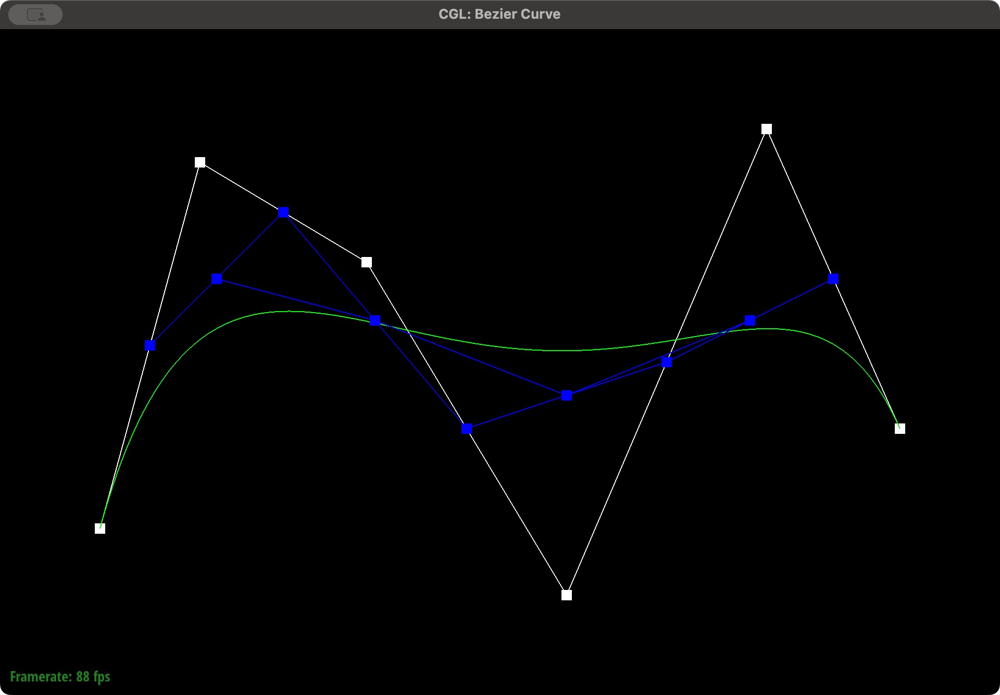
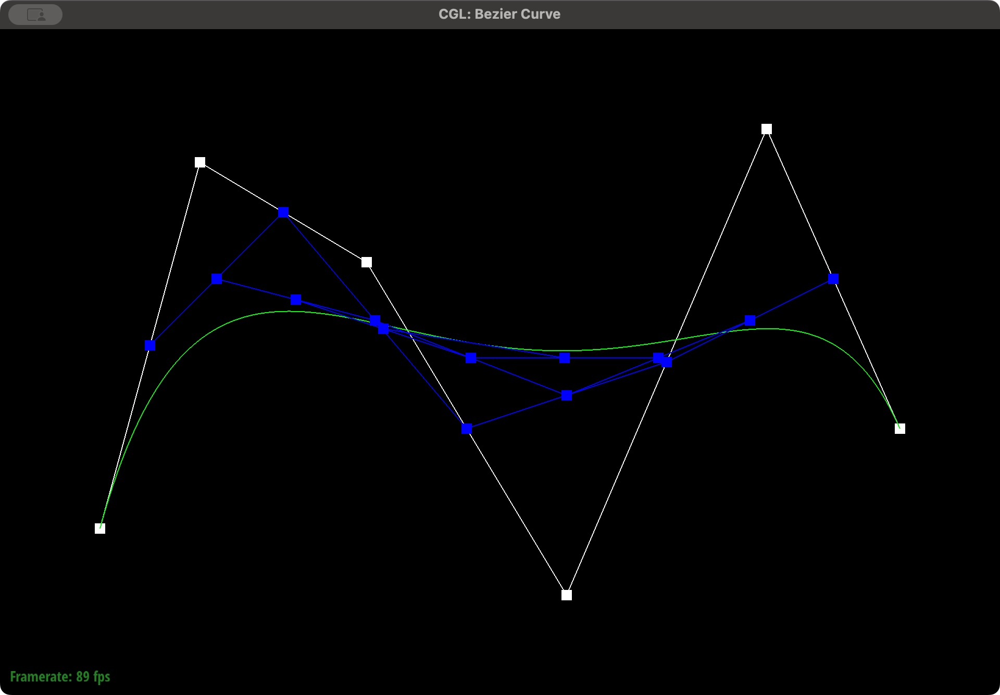
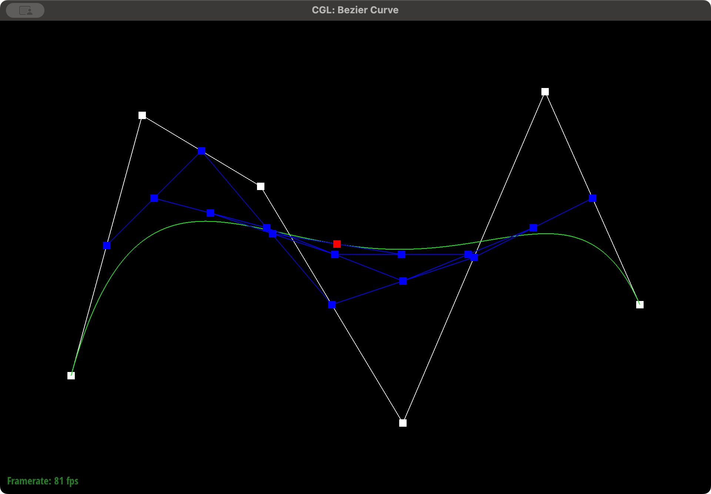
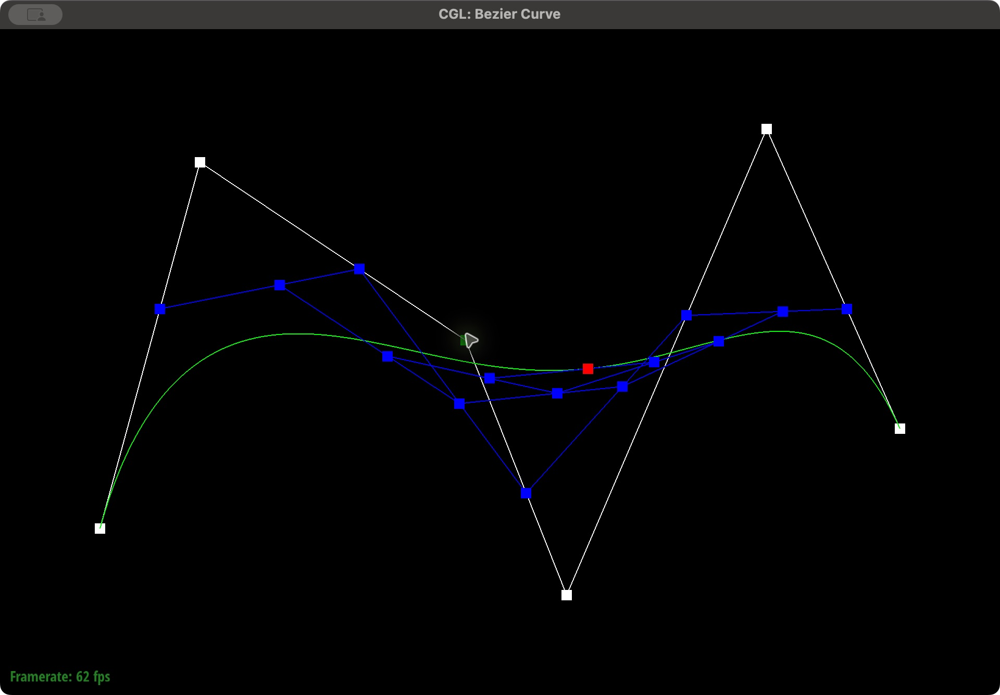
Moving the control point changes the curve itself, while increasing t with mouse scrolling moves the evaluated point farther along the curve. In this modified example, the red point is farther to the right and the middle of the green curve is lower relative to the previous results.
De Casteljau’s algorithm extends to Bezier surfaces by applying the same curve evaluation, but in two directions. For my implementation, I first evaluate each row of the 2D control point grid at u, which gives one intermediate point per row. Then, I evaluate a Bezier curve through those intermediate points at v to get the final surface point. In my implementation, evaluateStep() interpolates between neighboring 3D points, and evaluate1D() repeats this step until one point remains. Finally, evaluate(u, v) calls evaluate1D() on each row using u, then on the resulting points using v.
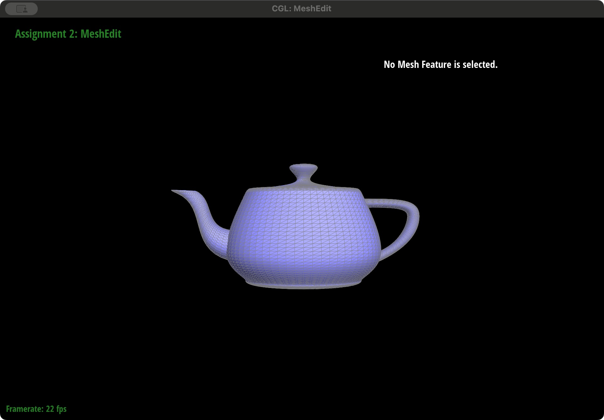
To implement the area-weighted vertex normals, starting from a vertex's halfedge, I visit each neighboring face by repeatedly following twin()->next(). For each actual triangle, I take the cross product of the two edge vectors from the vertex and add it to a running sum. The cross product's magnitude is twice the triangle's area, so larger triangles automatically contribute more. Then, I normalize only the final sum, giving a unit normal with the correct area weighting. I skipped virtual boundary faces, because they are not actual triangles.
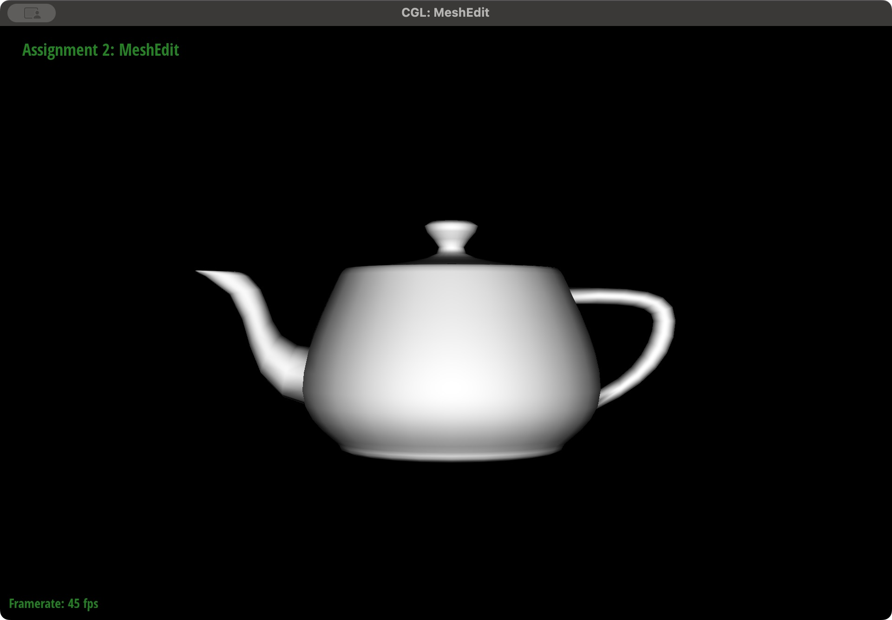
With flat shading, the individual faces are visible as abrupt changes in brightness. However, after toggling Q, the shading changes smoothly across neighboring triangles, especially visibly on the body and handle. It is clear that the geometry and silhouette stay the same, and that the difference comes from the normals used for shading.
I start by collecting the six halfedges, four vertices, and two faces around the selected interior edge. From there, I then flip the shared diagonal so that it connects the two opposite vertices instead. In order to make the pointer updates easier to follow, I keep references to the entire original neighborhood before changing anything, and this lets me use setNeighbors() to rebuild each triangle’s cycle without having to traverse connections that I have already modified.
Once the new connections are in place, I proceed to update the representative halfedges for the affected vertices, edge, and faces. One detail I pay attention to is that a vertex’s representative halfedge must still start at that vertex. Since flipping the edge changes the origins of some halfedges, I thus explicitly update these references to match the new connections. I also return immediately for boundary edges.
I ran into a bug where the flipped triangles had incorrect next pointers, so I traced each triangle’s three halfedges and fixed the connections until following next() three times returned to the starting halfedge.
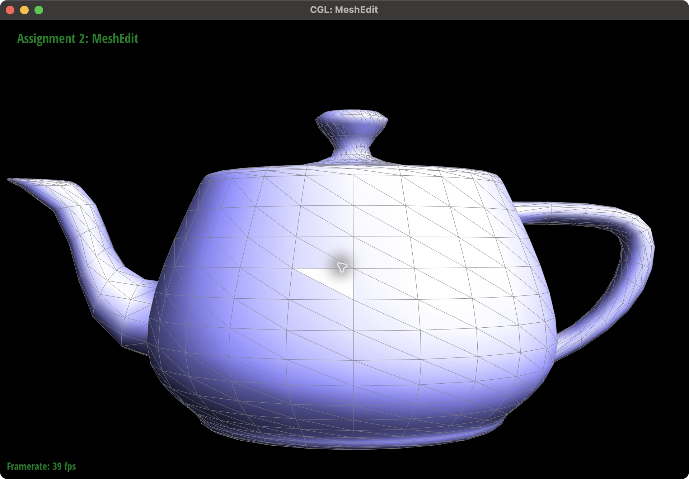
You can see that the three diagonals change direction, while their surrounding vertices remain in place. The mesh stays connected and no holes appear in the edited region.
For an interior edge, I first insert a new vertex at the midpoint of its endpoints. Then, I connect this vertex to the two opposite vertices, turning the original two triangles into four. This adds one vertex, three edges, six halfedges, and two faces. To keep the connections organized, I use setNeighbors() to rebuild each triangle’s halfedge cycle before updating the affected representative pointers. I also make sure the new vertex’s representative halfedge points along one half of the original edge, as required.
One implementation detail I use to prepare for Part 6 is to distinguish between edges that come from the original edge and edges that connect to the opposite vertices. Although splitting creates new mesh elements, I mark both halves of the original edge as old and only mark the edges to the opposite vertices as new. I mark the inserted vertex as new as well. This makes it easier to identify which edges to flip during Loop subdivision.
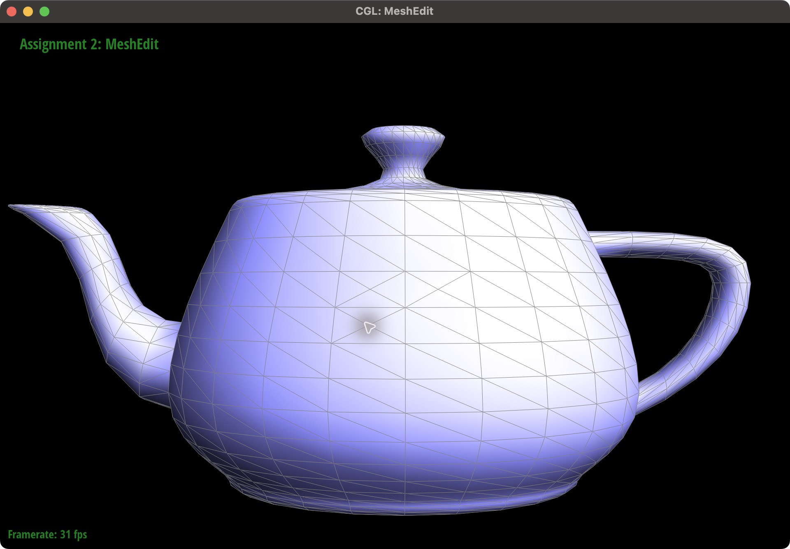
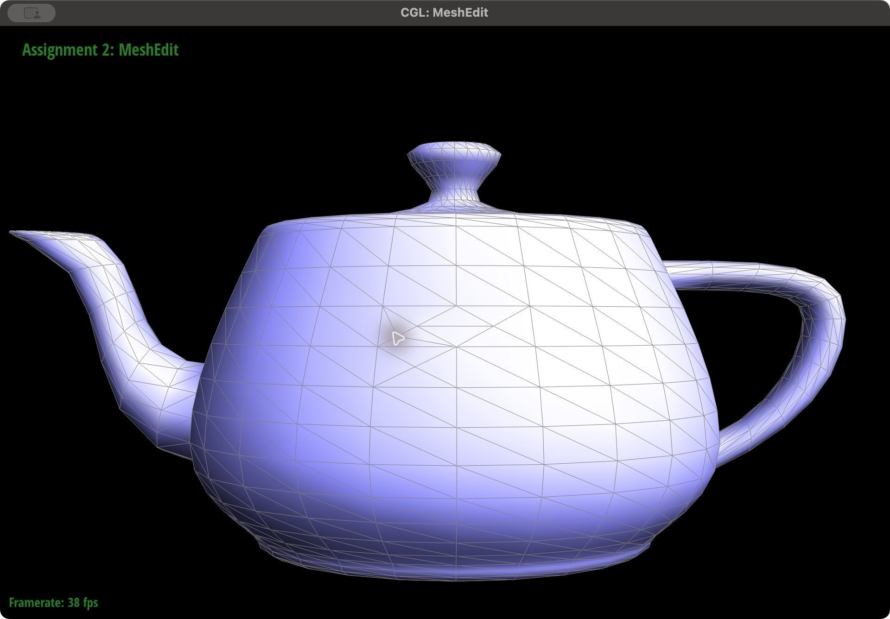
The split edges gain midpoint vertices and additional triangles. For the combined example, I then flipped the vertical edge between two of the edited regions and split another nearby edge. The new connections remain attached to the surrounding mesh.
For a boundary edge, I first choose the halfedge whose face is the actual interior triangle. This gives me a consistent starting point for reconnecting the mesh. Then, I insert a midpoint vertex and split that triangle into two. One detail I pay attention to is the virtual boundary face: instead of treating it as another triangle, I insert the additional boundary halfedge into its existing loop. This keeps the boundary connected without triangulating the virtual face. Overall, the split adds one vertex, two edges, four halfedges, and one actual face.
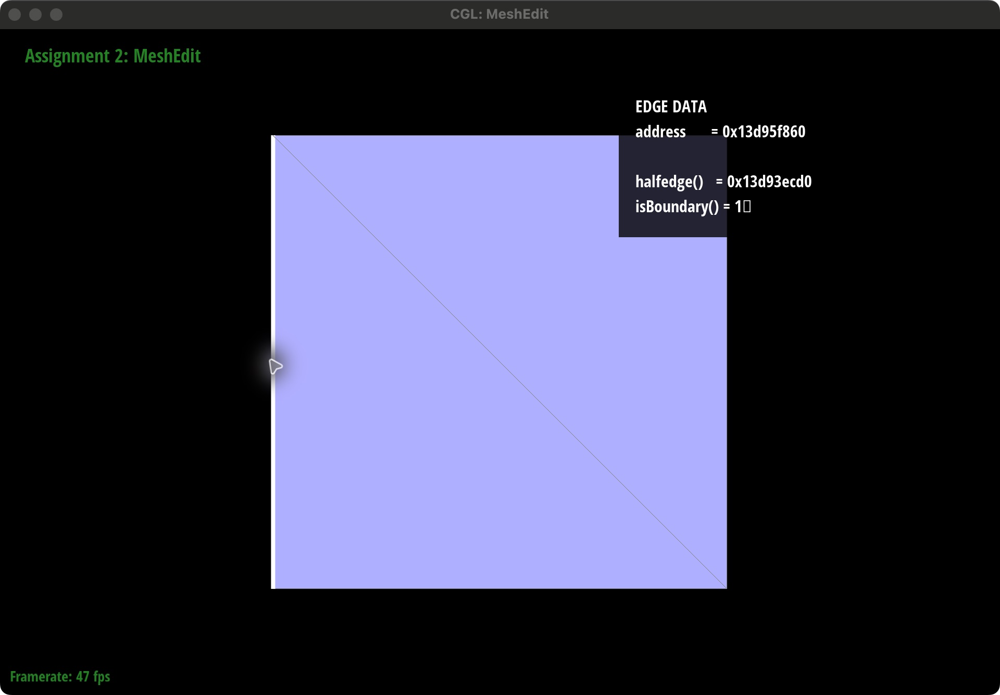
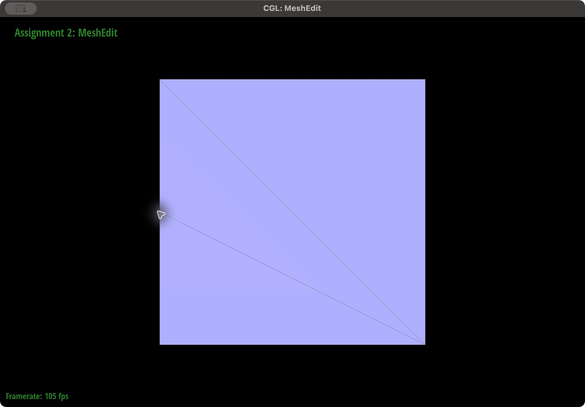
I first compute all updated positions using the original mesh and store them in newPosition. For an old interior vertex with n neighbors, I use (1 - n * u) * position + u * neighbor_sum, where u is 3/16 when n = 3 and 3/(8n) otherwise. For an interior edge with endpoints A and B and opposite vertices C and D, the new position is 3/8 * (A + B) + 1/8 * (C + D).
Next, I split every original edge and flip only new edges that connect an old vertex to a new vertex.
One bug I ran into was updating vertex positions before finishing all of the position calculations. As a result, some vertices used neighbors that had already moved, while others used the original positions. This made the subdivision depend on the order I visited the vertices. To fix this, I first calculate every new position using the original mesh and store it in newPosition. Then, I apply the saved positions only after completing the edge splits and flips.
The left column shows the original cube after repeated Loop subdivision. Its sharp edges and corners become rounded, and the shape shrinks because the new positions average neighboring vertices. The cube also becomes asymmetric.
This happens because the original face diagonals give the cube's corners different neighbor arrangements. Although the cube starts with a symmetric shape, its triangle connections are not symmetric. Since Loop subdivision uses these neighbors to calculate new positions, the corners move differently and the asymmetry becomes visible after repeated subdivisions.
For the right column, I split the diagonal on each of the six square faces before subdividing. Each face then has four triangles meeting at its center. The eight corners now have equivalent neighborhoods and degree six, while the six face-center vertices have degree four. This makes the connectivity symmetric across the cube, so the weighted updates preserve that symmetry.
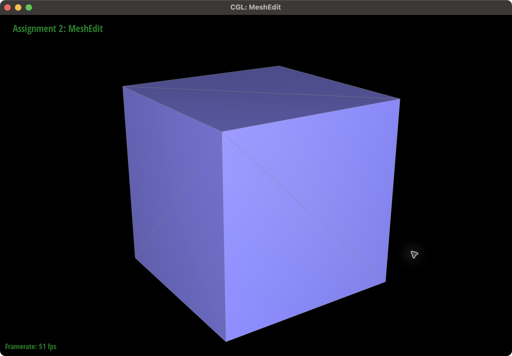
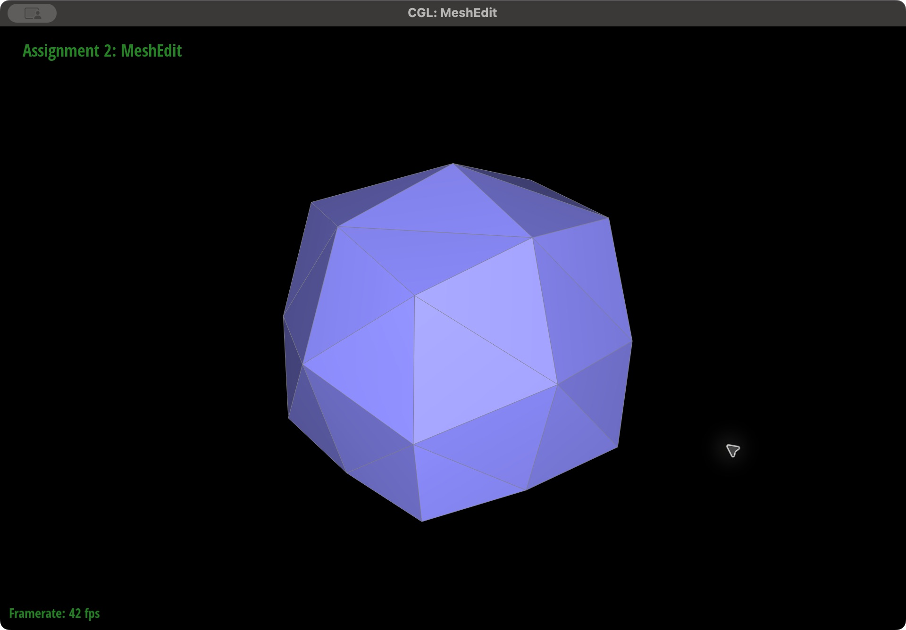
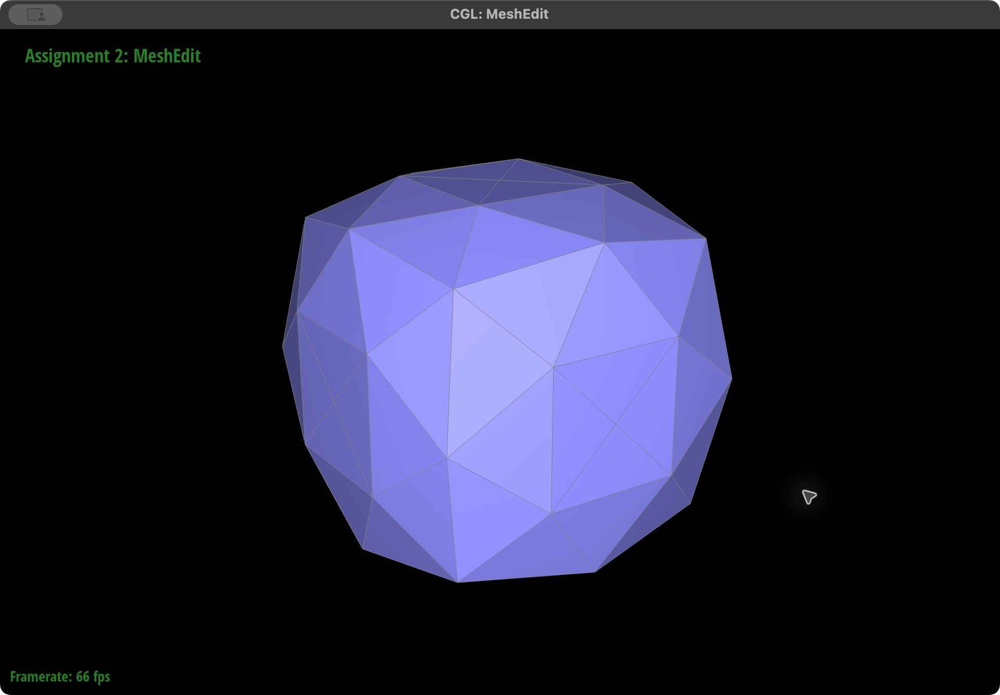
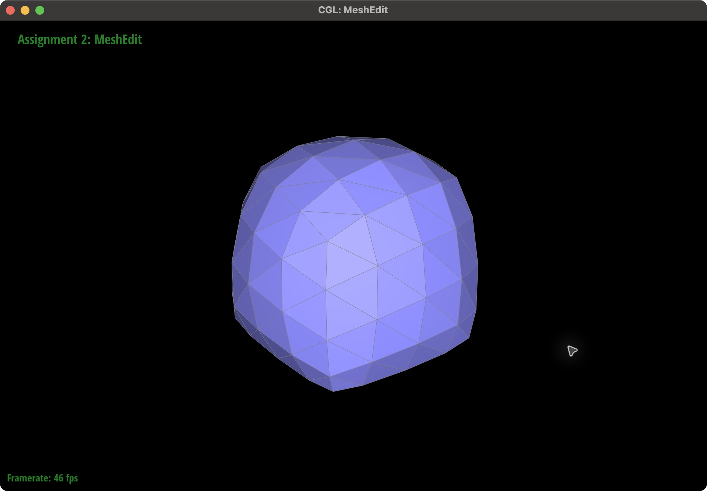
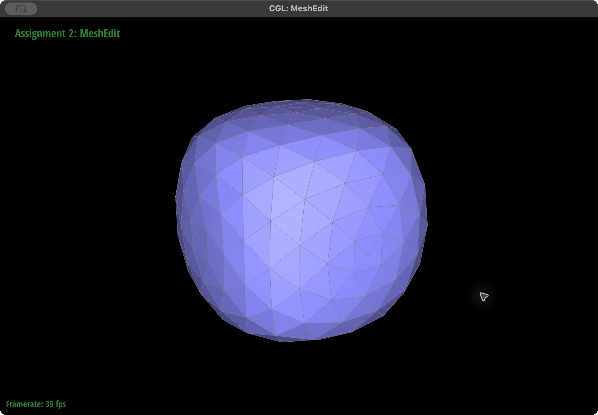
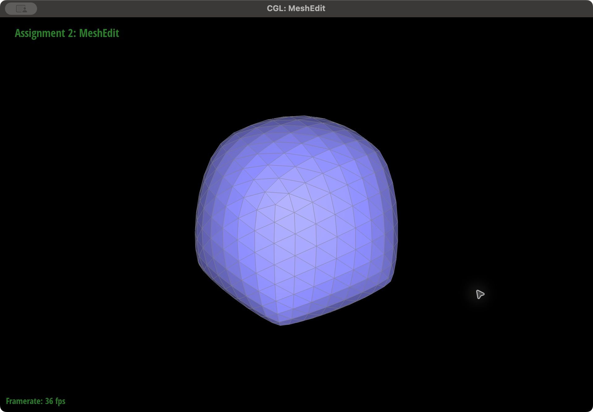
We can also see from the results that pre-splitting the edges also makes the corners move less, so the cube stays closer to its original size. This happens because the corners are connected to nearby face centers instead of corners across the faces. Essentially, the cube still becomes rounded after subdivision, but pre-splitting helps reduce how much it shrinks.
For an old boundary vertex, I use 3/4 of its original position plus 1/8 of each of its two boundary neighbors. A new boundary-edge vertex uses the midpoint of its endpoints. The interior rules remain the same, and boundary edges are never flipped. The example starts from the boundary-split square in Part 5; the open boundary stays intact while the corners become rounded.
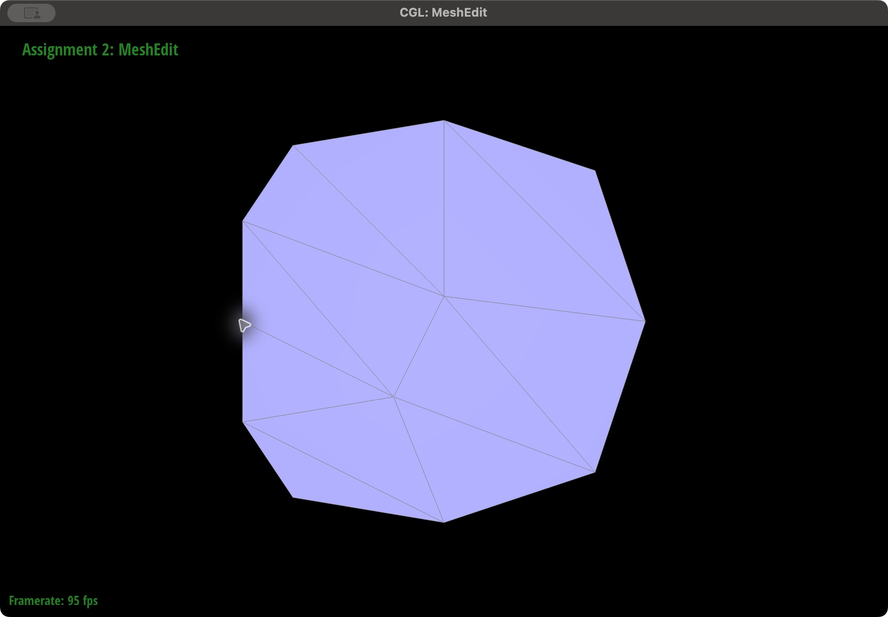
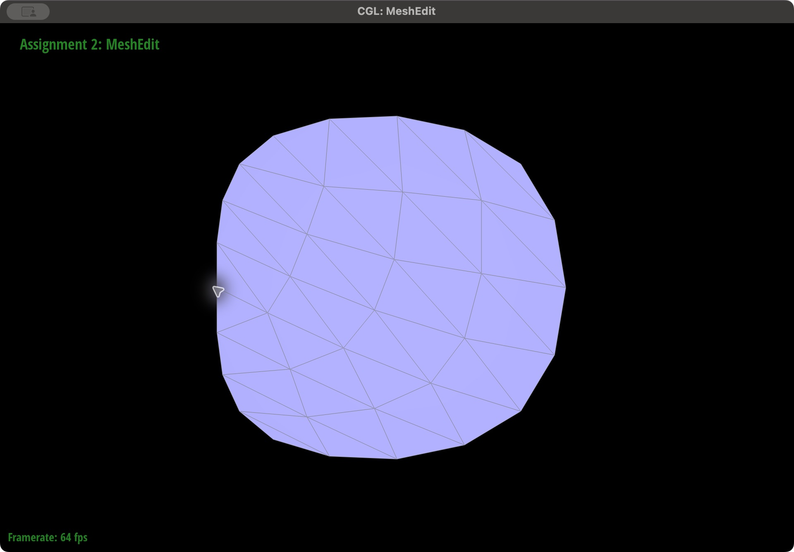
I also implemented the √3 subdivision scheme, using the B key. To implement, I first save the original edges and faces, compute the updated positions of the old vertices, and add a centroid to each triangle, so each centroid is connected to the three original corners. Then, I flip every original edge and apply the saved positions. For a vertex with n neighbors, alpha = (4 - 2 * cos(2 * pi / n)) / 9, and its new position is (1 - alpha) * position + (alpha / n) * neighbor_sum. This implementation supports closed meshes.
Each iteration triples the triangle count, as opposed to multiplying it by four for Loop subdivision. From the results, you can see the cube becomes smoother, and the edge directions change because the original edges are flipped. Compared with the Loop images above, the mesh is less dense at the same number of iterations.
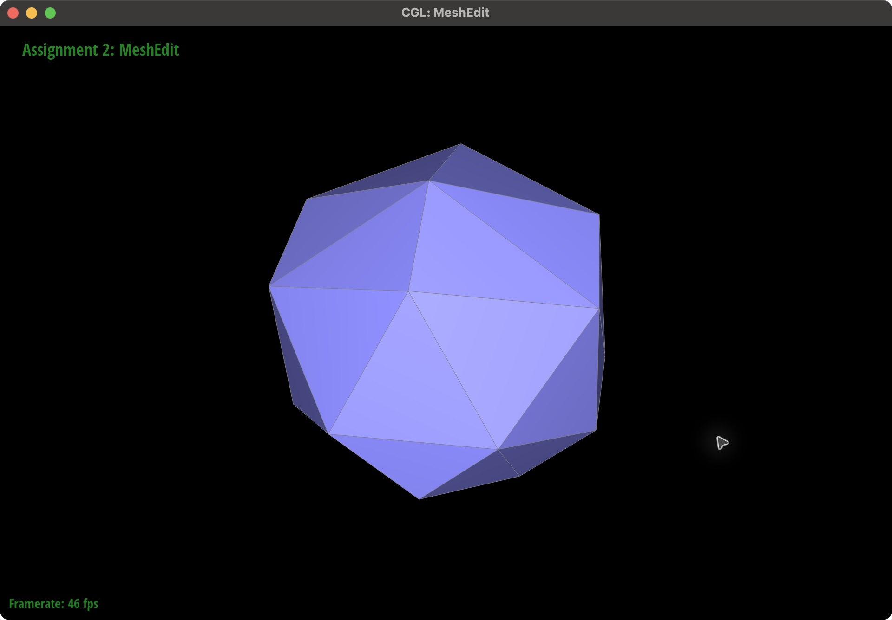
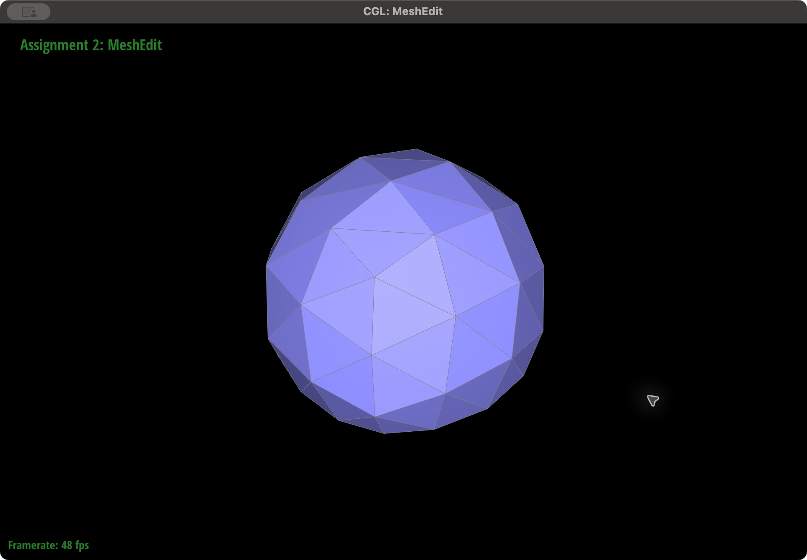
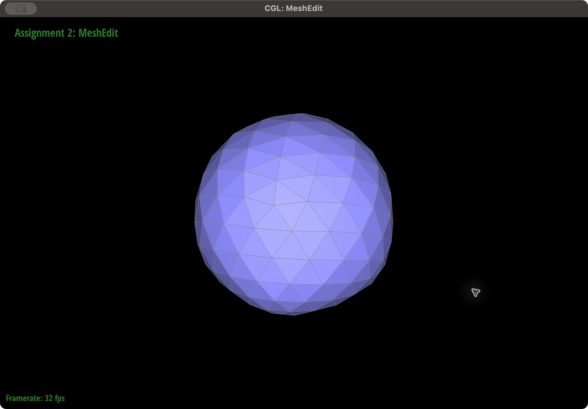